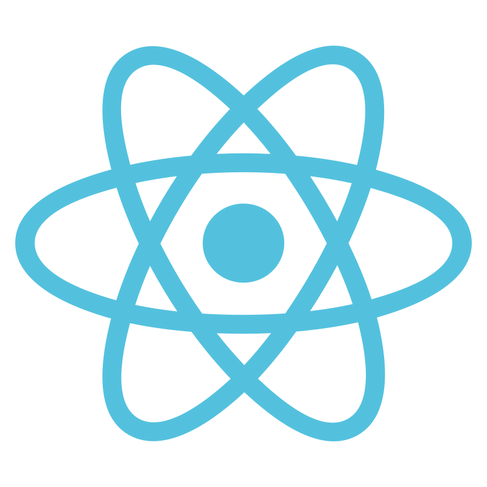
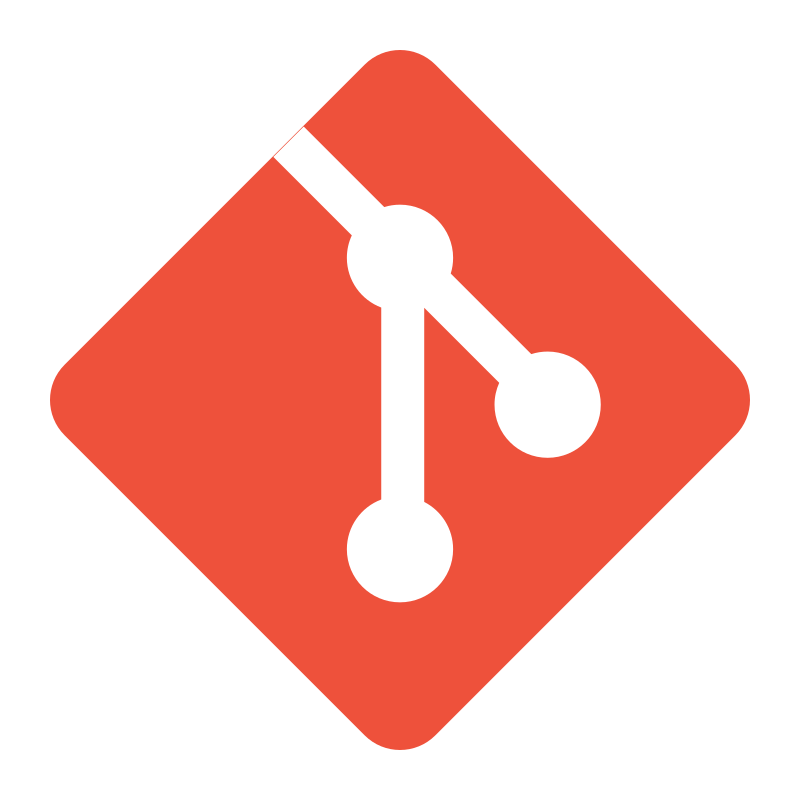
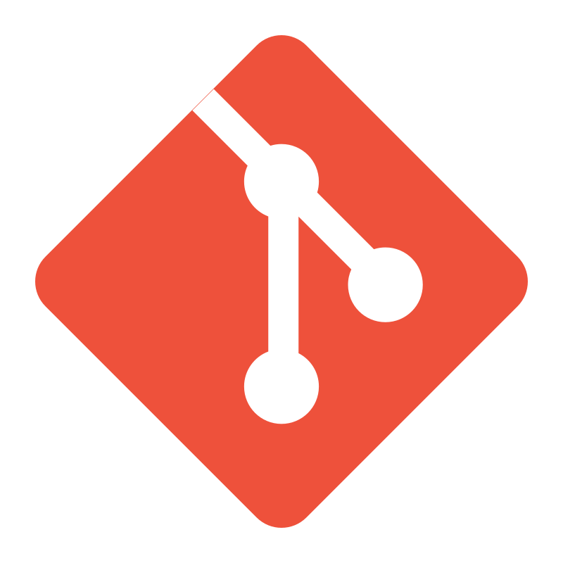

Code
Most of my experience has been in backend development with languages and frameworks for server-side solutions, but I also have solid knowledge in frontend technologies for building user interfaces.
DevOps
 

I have solid experience with cloud services, containerization, orchestration, and delivering operational solutions through CI/CD pipelines, automation scripts, and infrastructure as code.
Tools

I have strong experience with both SQL and NoSQL databases, distributed messaging systems, and tools for monitoring and observability.